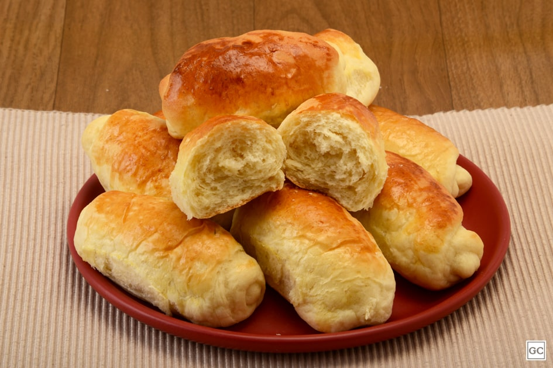
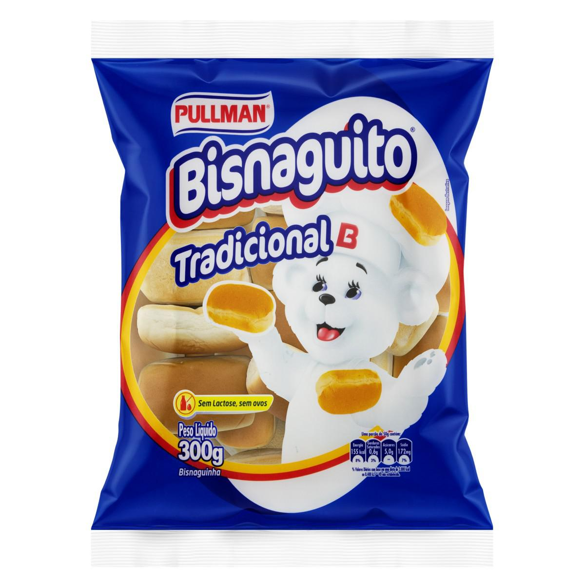

O Sucesso da Bisnaguinha 🍞
A bisnaguinha é um patrimônio afetivo no Brasil. Com sua massa extremamente macia, levemente adocicada e tamanho perfeito para lanches rápidos, ela conquistou o coração de gerações. Seja com manteiga derretida na chapa, requeijão ou o clássico presunto e queijo, é impossível comer uma só.
Nos supermercados, pacotes icônicos fazem a alegria da criançada, sendo um dos itens mais pedidos para a lancheira da escola.
Faça em Casa: Receita de Bisnaguinha Caseira
Nada supera o cheiro de pão assando em casa. Aqui está uma receita simples para você fazer a sua própria bisnaguinha, muito mais saudável e fofinha!
Ingredientes:
- 500g de farinha de trigo
- 1 sachê (10g) de fermento biológico seco
- 3 colheres (sopa) de açúcar
- 1 colher (chá) de sal
- 1 xícara de leite morno
- 2 colheres (sopa) de manteiga em temperatura ambiente
- 1 ovo
Modo de Preparo:
- Em uma tigela grande, misture o leite morno, o fermento e o açúcar. Deixe descansar por 10 minutos.
- Adicione o ovo, a manteiga derretida e o sal. Misture bem.
- Vá adicionando a farinha de trigo aos poucos, amassando até a massa desgrudar das mãos.
- Sove a massa por cerca de 10 minutos até ficar bem lisa e elástica.
- Deixe a massa descansar coberta com um pano por 1 hora (ou até dobrar de volume).
- Modele as bisnaguinhas no formato clássico, coloque em uma assadeira untada e deixe crescer por mais 30 minutos.
- Pincele gema de ovo por cima (para ficarem brilhantes) e asse em forno pré-aquecido a 180°C por cerca de 20 minutos ou até dourarem.


E para acompanhar o café? Conheça a Rosca Doce! 🥐☕
Se a bisnaguinha é perfeita para o lanche salgado, a Rosca (ou pão doce trançado) é a grande estrela do café da tarde. Feita com uma massa leve e adocicada, ela é tradicionalmente moldada em formato de coroa ou em grandes tranças.
O grande segredo das padarias brasileiras é a cobertura: muito leite condensado e coco ralado jogados por cima logo que ela sai do forno, criando aquela casquinha doce e molhadinha irresistível!
Conheça mais sobre a Rosca